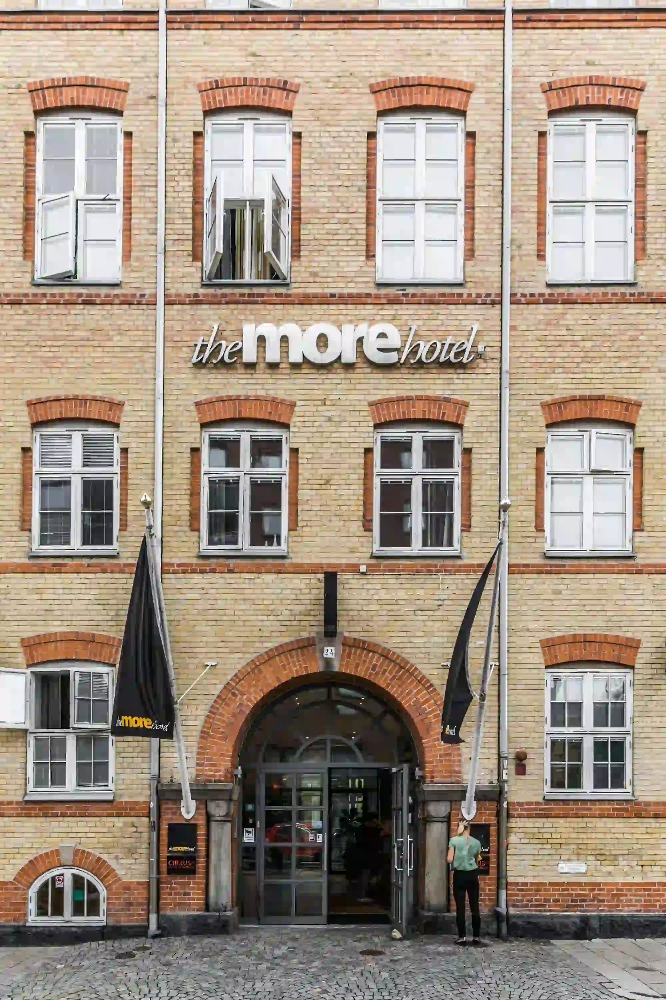
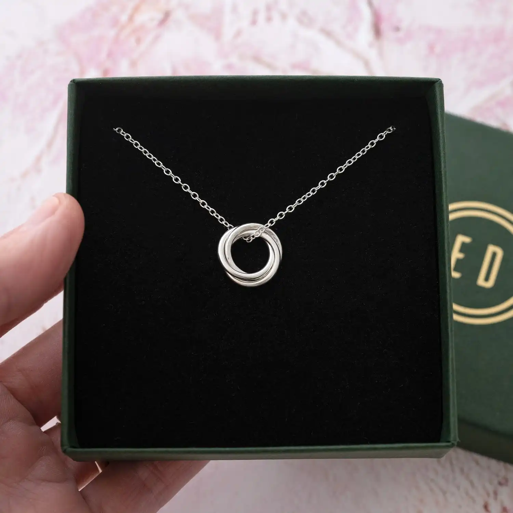
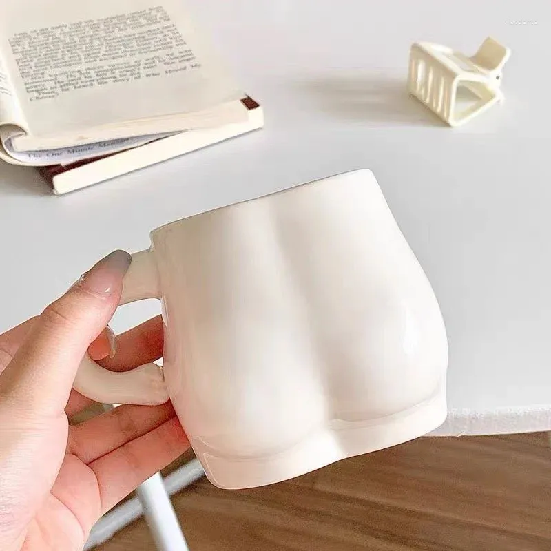
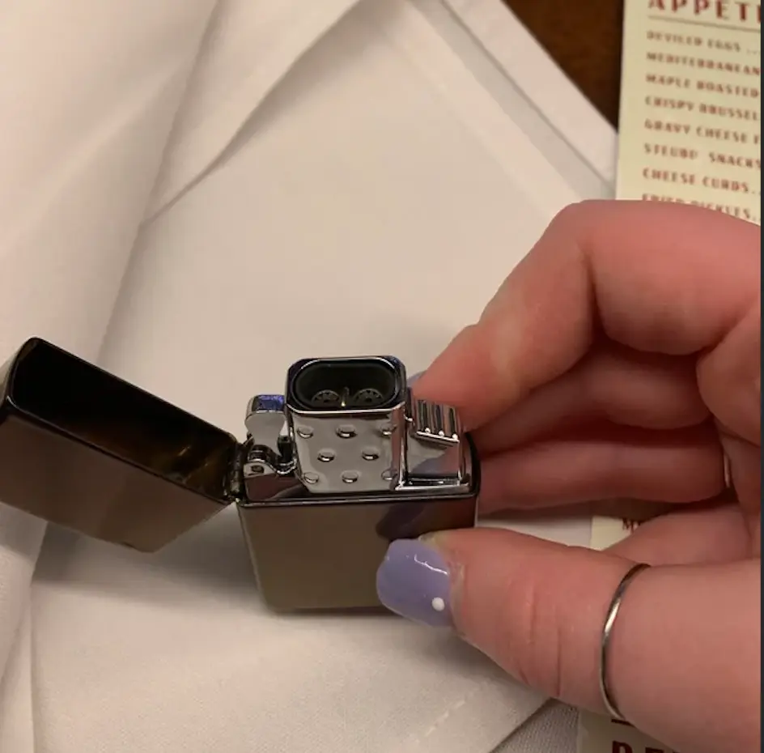

DEL 5
RUMMEN

Hotellet står där kubiskt och rödbrunt mot den blåa himlen, solen skiner hänsynslöst på lilla varvsgatan. Mia rör sig hastigt in genom lobbyn och genom de tomma korridorerna. Hon kommer först till rum 13, Sashas rum, dörren står på glänt, det är ingen där men kaoset talar till att någon nyligen, under stress, packat ihop sina saker.
De andra rummen berättar samma berättelse, Mia var för sen, med bara tre förnamn finns det inte mycket hon kan göra. Nu när tidspressen ligger på mindre kollar hon igenom det sista rummet lite noggrannare. På golvet mellan nattygsbordet och sängen skymtar hon något metalliskt. Ett halsband, en simpel silver kedja med en slät ring, den måste ha varit Annies.
Mia tar den och rör sig tillbaka de stegen hon tog, det finns kanske något mer att hitta i de andra rummen.
Och visst gör hon det, i Marias rum hittar hon en kopp som från det intressanta utseendet går det att gissa att den tillhörde kvinnan och inte hotellet.
På Sashas rum hittar hon en tändare, en sån zippo tändare med lock, den har bokstaven S inristad på framsidan.
Hon är inte säker på exakt vad hon ska med dessa objekt till men de känns viktiga, hon bär de med sig, utan riktigt mål rör hon sig iväg. Hennes mage gör ifrån sig ett ljud och hon påminns om den där salladen hon aldrig hann äta. Mia vill minnas att det finns ett Wayne's coffee någonstans här i närheten.

Här sover man gott bakom tegel och glas, ett tillfälligt hem i Malmös stadsfas. Jag ramar din vy, jag håller mig ljus, fast jag bär tystnad och säger mig skydda. Stå still där du är, låt blicken bli varm - vad har jag för färg på hotellets karm?